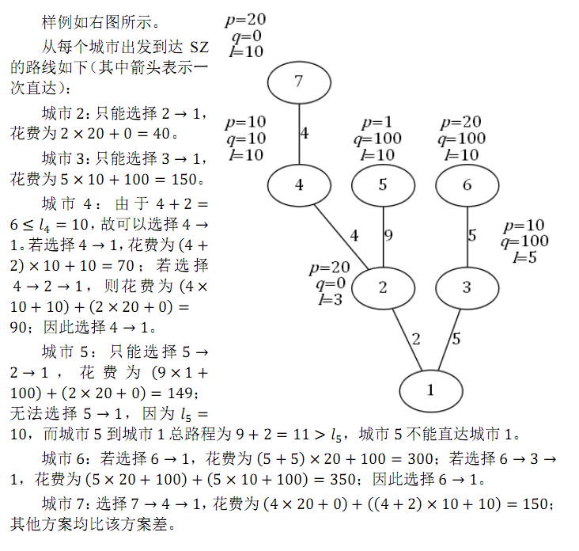

第 1 行包含2个非负整数 n,t，分别表示城市的个数和数据类型（其意义将在后面提到）。输入文件的第 2 到 n 行，每行描述一个除SZ之外的城市。其中第 v 行包含 5 个非负整数 f_v,s_v,p_v,q_v,l_v，分别表示城市 v 的父亲城市，它到父亲城市道路的长度，票价的两个参数和距离限制。请注意：输入不包含编号为 1 的SZ市，第 2 行到第 n 行分别描述的是城市 2 到城市 n。
第 1 行包含2个非负整数 n,t，分别表示城市的个数和数据类型（其意义将在后面提到）。输入文件的第 2 到 n 行，每行描述一个除SZ之外的城市。其中第 v 行包含 5 个非负整数 f_v,s_v,p_v,q_v,l_v，分别表示城市 v 的父亲城市，它到父亲城市道路的长度，票价的两个参数和距离限制。请注意：输入不包含编号为 1 的SZ市，第 2 行到第 n 行分别描述的是城市 2 到城市 n。
输出包含 n-1 行，每行包含一个整数。其中第 v 行表示从城市 v+1 出发，到达SZ市最少的购票费用。同样请注意：输出不包含编号为 1 的SZ市。
7 3
1 2 20 0 3
1 5 10 100 5
2 4 10 10 10
2 9 1 100 10
3 5 20 100 10
4 4 20 0 10
40
150
70
149
300
150

对于所有测试数据，保证 0≤pv≤106，0≤qv≤1012，1≤fv<v；保证 0<sv≤lv≤2×1011，且任意城市到SZ市的总路程长度不超过 2×1011。
输入的 t 表示数据类型，0≤t<4，其中：
当 t=0 或 2 时，对输入的所有城市 v，都有 fv=v-1，即所有城市构成一个以SZ市为终点的链；
当 t=0 或 1 时，对输入的所有城市 v，都有 lv=2×1011，即没有移动的距离限制，每个城市都能到达它的所有祖先；
当 t=3 时，数据没有特殊性质。
n=2×10^5